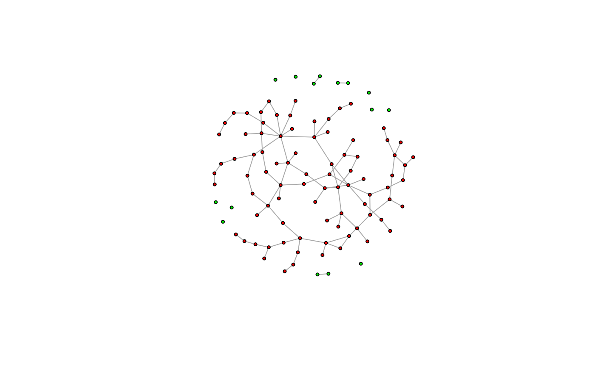

Vertex sequences can be indexed very much like a plain numeric R vector, with some extras.
Details
Vertex sequences can be indexed using both the single bracket and the double bracket operators, and they both work the same way. The only difference between them is that the double bracket operator marks the result for printing vertex attributes.
Multiple indices
When using multiple indices within the bracket, all of them
are evaluated independently, and then the results are concatenated
using the c() function (except for the na_ok argument,
which is special an must be named. E.g. V(g)[1, 2, .nei(1)]
is equivalent to c(V(g)[1], V(g)[2], V(g)[.nei(1)]).
Index types
Vertex sequences can be indexed with positive numeric vectors, negative numeric vectors, logical vectors, character vectors:
When indexed with positive numeric vectors, the vertices at the given positions in the sequence are selected. This is the same as indexing a regular R atomic vector with positive numeric vectors.
When indexed with negative numeric vectors, the vertices at the given positions in the sequence are omitted. Again, this is the same as indexing a regular R atomic vector.
When indexed with a logical vector, the lengths of the vertex sequence and the index must match, and the vertices for which the index is
TRUEare selected.Named graphs can be indexed with character vectors, to select vertices with the given names.
Vertex attributes
When indexing vertex sequences, vertex attributes can be referred
to simply by using their names. E.g. if a graph has a name vertex
attribute, then V(g)[name == "foo"] is equivalent to
V(g)[V(g)$name == "foo"]. See more examples below. Note that attribute
names mask the names of variables present in the calling environment; if
you need to look up a variable and you do not want a similarly named
vertex attribute to mask it, use the .env pronoun to perform the
name lookup in the calling environment. In other words, use
V(g)[.env$name == "foo"] to make sure that name is looked up
from the calling environment even if there is a vertex attribute with the
same name. Similarly, you can use .data to match attribute names only.
Special functions
There are some special igraph functions that can be used only in expressions indexing vertex sequences:
.neitakes a vertex sequence as its argument and selects neighbors of these vertices. An optional
modeargument can be used to select successors (mode="out"), or predecessors (mode="in") in directed graphs..incTakes an edge sequence as an argument, and selects vertices that have at least one incident edge in this edge sequence.
.fromSimilar to
.inc, but only considers the tails of the edges..toSimilar to
.inc, but only considers the heads of the edges..innei,.outnei.innei(v)is a shorthand for.nei(v, mode = "in"), and.outnei(v)is a shorthand for.nei(v, mode = "out").
Note that multiple special functions can be used together, or with regular indices, and then their results are concatenated. See more examples below.
See also
Other vertex and edge sequences:
E(),
V(),
as_ids(),
igraph-es-attributes,
igraph-es-indexing,
igraph-es-indexing2,
igraph-vs-attributes,
igraph-vs-indexing2,
print.igraph.es(),
print.igraph.vs()
Other vertex and edge sequence operations:
c.igraph.es(),
c.igraph.vs(),
difference.igraph.es(),
difference.igraph.vs(),
igraph-es-indexing,
igraph-es-indexing2,
igraph-vs-indexing2,
intersection.igraph.es(),
intersection.igraph.vs(),
rev.igraph.es(),
rev.igraph.vs(),
union.igraph.es(),
union.igraph.vs(),
unique.igraph.es(),
unique.igraph.vs()
Examples
# -----------------------------------------------------------------
# Setting attributes for subsets of vertices
largest_comp <- function(graph) {
cl <- components(graph)
V(graph)[which.max(cl$csize) == cl$membership]
}
g <- sample_(
gnp(100, 2 / 100),
with_vertex_(size = 3, label = ""),
with_graph_(layout = layout_with_fr)
)
giant_v <- largest_comp(g)
V(g)$color <- "green"
V(g)[giant_v]$color <- "red"
plot(g)

# -----------------------------------------------------------------
# nei() special function
g <- make_graph(c(1, 2, 2, 3, 2, 4, 4, 2))
V(g)[.nei(c(2, 4))]
#> + 4/4 vertices, from 1ffe7ea:
#> [1] 1 2 3 4
V(g)[.nei(c(2, 4), "in")]
#> + 3/4 vertices, from 1ffe7ea:
#> [1] 1 2 4
V(g)[.nei(c(2, 4), "out")]
#> + 3/4 vertices, from 1ffe7ea:
#> [1] 2 3 4
# -----------------------------------------------------------------
# The same with vertex names
g <- make_graph(~ A - +B, B - +C:D, D - +B)
V(g)[.nei(c("B", "D"))]
#> + 4/4 vertices, named, from 025bd73:
#> [1] A B C D
V(g)[.nei(c("B", "D"), "in")]
#> + 3/4 vertices, named, from 025bd73:
#> [1] A B D
V(g)[.nei(c("B", "D"), "out")]
#> + 3/4 vertices, named, from 025bd73:
#> [1] B C D
# -----------------------------------------------------------------
# Resolving attributes
g <- make_graph(~ A - +B, B - +C:D, D - +B)
V(g)$color <- c("red", "red", "green", "green")
V(g)[color == "red"]
#> + 2/4 vertices, named, from 62e18d5:
#> [1] A B
# Indexing with a variable whose name matches the name of an attribute
# may fail; use .env to force the name lookup in the parent environment
V(g)$x <- 10:13
x <- 2
V(g)[.env$x]
#> + 1/4 vertex, named, from 62e18d5:
#> [1] B